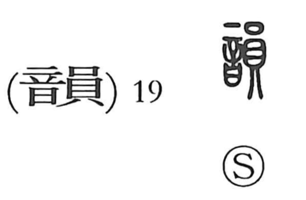

韻

Kun: | On: in
rhyme ・ resonance ・ tone ・ elegant charm
Explanation
A phono-semantic compound: 音 conveys the idea of sound, while 員 serves as the phonetic and also lends a nuance of something mellow and graceful. In earlier usage, 均 was at times employed as the phonetic, and in Japan a streamlined form akin to today’s 韵 appeared; this was further abbreviated to 勻, from which the kokuji 匂 (“to smell”) later developed. Thus 韻 names not only the resonance or tonal quality of sound, but by extension any tasteful presence endowed with charm, as in the expression 風韻, “elegant style.”